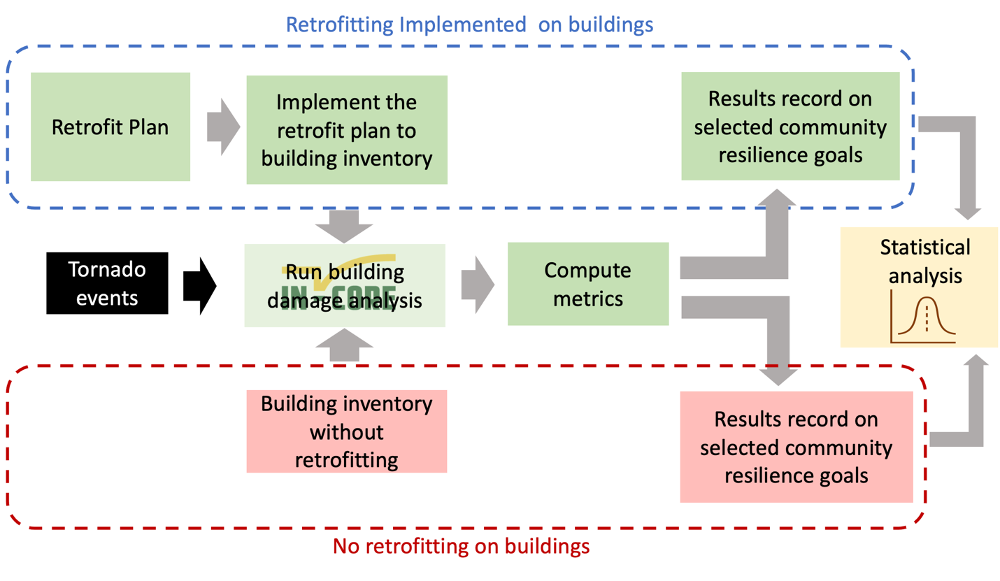

An example of Joplin tornado scenario analysis with Joplin retrofit plan#
Description#
The purpose of this notebook is to validate the efficiency of retrofit plan generated from multi-objective optimization. The retrofit plan is an optimal solution with given budget and other constraints. The first step is computing the building damage considering no retrofit effort implemented on the building inventory. Then we implement selected retrofit plan on the building inventory and compute the building damage. Using result from the building damage with and without retrofit effort, we can calculate population dislocation or other metric to see if the potential impact is reduced by the retrofit plan.

Prerequisites#
The following modules are necessary to run this notebook. To ensure dependencies are correct, install all modules through conda.
Module |
Version |
Notes |
|---|---|---|
pyIncore |
=>1.1.0 |
see: https://incore.ncsa.illinois.edu/doc/incore/install_pyincore.html |
pyIncore_viz |
=>1.5.0 |
see: https://incore.ncsa.illinois.edu/doc/pyincore_viz/index.html |
import csv
import pandas as pd
import json
from pathlib import Path
import math
import matplotlib as mpl
import matplotlib.pyplot as plt # This cell is used to import python libraries to visualize the analysis outputs.
import matplotlib.image as mpimg
from matplotlib.widgets import Cursor
import matplotlib.pylab as plb
import pandas as pd
import numpy as np
import contextily as ctx
import pyomo
import warnings
import mplcursors
import copy
import os
from pyincore import Dataset, DataService
from pyincore import HazardService
from pyincore import IncoreClient
from pyincore import FragilityService
from pyincore_viz.plotutil import PlotUtil as plot
from pyincore.models.fragilitycurveset import FragilityCurveSet
from pyincore_viz.plotutil import PlotUtil as frag_plot
from pyincore_viz.geoutil import GeoUtil as viz
from pyincore import Mapping, MappingSet
from pyincore.analyses.buildingdamage import BuildingDamage
from pyincore.analyses.montecarlofailureprobability import MonteCarloFailureProbability
from pyincore.analyses.populationdislocation import PopulationDislocation, PopulationDislocationUtil
from pyincore.analyses.buildingfunctionality import BuildingFunctionality
import palettable.colorbrewer
parent_dir = ""
test_dir = "test_results"
path = os.path.join(parent_dir, test_dir)
try:
os.mkdir(path)
print("Directory '%s' created." %test_dir)
except FileExistsError:
print("Directory '%s' already exists." %test_dir)
os.chdir("test_results")
warnings.filterwarnings("ignore")
Directory 'test_results' already exists.
Population dislocation function#
def population_dislocation(building_dmg_result):
""" Calcualte the population dislocation from a tornado event.
Args:
building_dmg_result (obj): Infrastructure damage from building damage analysis.
Returns:
pd.DataFrame: Population dislocation results.
"""
# data input
client.clear_cache()
housing_unit_alloc = "617319654746910107c77f88"
bg_data = "5d4c9545b9219c0689b2358a"
value_loss = "60354810e379f22e16560dbd"
# Create Population dislocation analysis
pop_dis = PopulationDislocation(client)
# Load analysis input datasets
pop_dis.load_remote_input_dataset("housing_unit_allocation", housing_unit_alloc)
pop_dis.load_remote_input_dataset("block_group_data", bg_data)
pop_dis.load_remote_input_dataset("value_loss_param", value_loss)
pop_dis.set_input_dataset("building_dmg", building_dmg_result) # Load the Joplin building damage results dataset
seed = 1111
pop_dis.set_parameter("result_name", "pop-dislocation-results")
pop_dis.set_parameter("seed", seed)
#results:
pop_dis.run_analysis()
# Retrieve result dataset
dislocation_result = pop_dis.get_output_dataset("result")
# Convert dataset to Pandas DataFrame
df_dislocation = dislocation_result.get_dataframe_from_csv(low_memory=False)
df_dislocation_res = df_dislocation[(df_dislocation["archetype"]==1) | (df_dislocation["archetype"]==5)]
# Calculate the dislocated populaiton
population_dislocation = df_dislocation_res[df_dislocation_res["dislocated"]==True]['numprec'].sum()
return population_dislocation
Building damage without retrofit function#
def building_damage_without_retrofit(hazard_id, fragilityMappingSet):
""" Calculate the building damage without retrofitting implemented from a tornado event
by using INCORE service.
Args:
hazard_id (str): Hazard ID.
fragilityMappingSet (obj): Fragility mapping data.
Returns:
obj: Building damage results.
pd.DataFrame: building damage results.
"""
bldg_dmg = BuildingDamage(client)
result_name = "tornado_dmg_result_no_retrofit" + hazard_id
# building damage analysis through INCORE service
bldg_dmg.load_remote_input_dataset("buildings", bldg_dataset_id)
bldg_dmg.set_input_dataset('dfr3_mapping_set', mapping_set_no_retrofit)
bldg_dmg.set_parameter("fragility_key", "Non-Retrofit Fragility ID Code") # without retrofitting, check the Mapping object
bldg_dmg.set_parameter("result_name", result_name)
bldg_dmg.set_parameter("hazard_type", hazard_type)
bldg_dmg.set_parameter("hazard_id", hazard_id)
bldg_dmg.set_parameter("num_cpu", 4)
bldg_dmg.run_analysis()
building_dmg_result = bldg_dmg.get_output_dataset("ds_result")
# Convert dataset to Pandas DataFrame
df_building_dmg = building_dmg_result.get_dataframe_from_csv()
return building_dmg_result, df_building_dmg
Building damage with retrofit function#
def building_damage_with_retrofit(hazard_id, fragilityMappingSet, retrofit_data):
""" Calculate the building damage with retrofitting implemented from a tornado event
by using INCORE service.
Args:
hazard_id (str): Hazard ID.
fragilityMappingSet (obj): Fragility mapping data.
retrofit_level (str): Retrofit level.
Returns:
obj: Building damage results.
pd.DataFrame: Building damage results.
"""
bldg_dmg = BuildingDamage(client)
result_name = "tornado_dmg_result_retrofit"
# building damage analysis through INCORE service
bldg_dmg.load_remote_input_dataset("buildings", bldg_dataset_id)
bldg_dmg.set_input_dataset("retrofit_strategy", retrofit_data)
bldg_dmg.set_input_dataset("dfr3_mapping_set", mapping_set_with_retrofit)
bldg_dmg.set_parameter("fragility_key", "Fragility ID Code") # use it when use retrofit mapping
bldg_dmg.set_parameter("result_name", result_name)
bldg_dmg.set_parameter("hazard_type", hazard_type)
bldg_dmg.set_parameter("hazard_id", hazard_id)
bldg_dmg.set_parameter("num_cpu", 4)
bldg_dmg.run_analysis()
#results
building_dmg_result = bldg_dmg.get_output_dataset('ds_result')
# Convert dataset to Pandas DataFrame
df_building_dmg = building_dmg_result.get_dataframe_from_csv()
return building_dmg_result, df_building_dmg
Monte Carlo building damage function#
def MC_building_damage(num_samples, building_dmg_result):
""" Calculate the building damage using Metro Carlo simulation.
Args:
num_samples (int): Number of samples.
building_dmg_result (obj): Building damage results.
Returns:
obj: Building failure probability.
pd.DataFrame: Building failure probability.
"""
mc_bldg = MonteCarloFailureProbability(client)
result_name = "tornado_mc_failure_probability_buildings"
mc_bldg.set_input_dataset("damage", building_dmg_result)
mc_bldg.set_parameter("num_cpu", 8)
mc_bldg.set_parameter("num_samples", num_samples)
mc_bldg.set_parameter("damage_interval_keys", ["DS_0", "DS_1", "DS_2", "DS_3"])
mc_bldg.set_parameter("failure_state_keys", ["DS_1", "DS_2", "DS_3"])
mc_bldg.set_parameter("result_name", result_name)
mc_bldg.run_analysis()
building_failure_probability = mc_bldg.get_output_dataset("failure_probability") # get buildings failure probabilities
df_bldg_fail = building_failure_probability.get_dataframe_from_csv()
return building_failure_probability,df_bldg_fail
Read retrofit solutions and select retrofit plan#
This section demonstrates how to select retrofit solution from Pareto plot. The retrofit solutions are produced from the optimized model intergrating three objective functions: direct economic loss, population dislocation, building functionality for residential buildings in Joplin, MO. The retrofitting budget is $181M and the number of epsilon step is 20. The total number of solutions is 109.
# Pareto objective function data
print(os.getcwd())
pareto_solutions = pd.read_csv("../budget_20_0513_2021_objectives.csv")
/Users/mo/dev/pyincore_110/retrofit_plan_Joplin_2021_12_01/test_results
# Extract objective values from the dataframe
eco_loss = (pareto_solutions["Economic_loss"] / 1565).tolist()
popu_dis = (pareto_solutions["Dislocation"] / 1565).tolist()
func = pareto_solutions["Functionality"].tolist()
solutions_id = pareto_solutions["Solution_id"].tolist()
# Renders the figure in a notebook
plt.ion()
<matplotlib.pyplot._IonContext at 0x7fe5301f4c70>
# Visualize the Pareto objective values
cm1 = mpl.colors.ListedColormap(palettable.scientific.sequential.Nuuk_10.mpl_colors)
plt.figure(figsize=(15,7))
plt.scatter(eco_loss,popu_dis, c=func, cmap=cm1, s=100)
plt.xticks(fontsize=15)
plt.yticks(fontsize=15)
# color bar setting
v1 = np.linspace(min(func), max(func), 5, endpoint=True)
norm = mpl.colors.BoundaryNorm(v1, cm1.N, clip=True)
cb1 = plt.colorbar(ticks = v1)
cb1.set_label(label="Average community building functionality", size=15)
cb1.ax.tick_params(labelsize=15)
plt.clim(min(func), max(func))
plt.xlabel("Average Direct Economic loss ($Million) per block group",fontsize = 20)
plt.ylabel("Average Population Dislocation per block group",fontsize = 20)
plt.show()
# Visualize the Pareto objective values
cm1 = mpl.colors.ListedColormap(palettable.scientific.sequential.Nuuk_10.mpl_colors)
plt.figure(figsize=(15,7))
plt.scatter(eco_loss,func, c=popu_dis, cmap=cm1, s=100)
plt.xticks(fontsize=15)
plt.yticks(fontsize=15)
# color bar setting
v1 = np.linspace(min(popu_dis), max(popu_dis), 5, endpoint=True)
norm = mpl.colors.BoundaryNorm(v1, cm1.N, clip=True)
cb1 = plt.colorbar(ticks = v1)
cb1.set_label(label="Average Population Dislocation per block group", size=15)
cb1.ax.tick_params(labelsize=15)
plt.clim(min(popu_dis), max(popu_dis))
plt.xlabel("Average Direct Economic loss ($Million) per block group", fontsize = 20)
plt.ylabel("Average community building functionality", fontsize = 20)
plt.show()
Each point in the Pareto plot represents an optimal solution. Users can use the Solution id to find the retrofit solution from all the solutions produced from the optimization model.
selected_popu = min(popu_dis)
selected_func = func[popu_dis.index(selected_popu)]
solution_id_selected = solutions_id[popu_dis.index(selected_popu)]
# color theme
cm1 = mpl.colors.ListedColormap(palettable.scientific.sequential.Nuuk_10.mpl_colors)
plt.figure(figsize=(15,7))
plt.scatter(popu_dis, func, c=eco_loss, cmap=cm1, s=100)
plt.xticks(fontsize=15)
plt.yticks(fontsize=15)
p1 = plt.scatter(selected_popu,selected_func, color="red", s=150, marker="D",
alpha=0.8, label="Selected Plan")
# color bar setting
v1 = np.linspace(min(eco_loss), max(eco_loss), 5, endpoint=True)
norm = mpl.colors.BoundaryNorm(v1, cm1.N, clip=True)
cb1 = plt.colorbar(ticks = v1)
cb1.set_label(label="Average Direct Economic loss ($Million) per block group", size=15)
cb1.ax.tick_params(labelsize=15)
plt.clim(min(eco_loss), max(eco_loss))
plt.legend(fontsize=12)
plt.ylabel("Average community building functionality", fontsize = 20)
plt.xlabel("Average Population Dislocation per block group", fontsize = 20)
plt.show()
solutions = pd.read_csv("../decision_variable_B20.csv")
solution_id_selected
19
selected_plan = solutions[(solutions["Solution_id"]==solution_id_selected)]
selected_plan.head()
| Solution_id | Number_buildings | Z | S | K | |
|---|---|---|---|---|---|
| 0 | 19 | 0.0 | 290970101001000 | 1 | 0 |
| 1 | 19 | 0.0 | 290970101001000 | 1 | 1 |
| 2 | 19 | 0.0 | 290970101001000 | 1 | 2 |
| 3 | 19 | 5.0 | 290970101001000 | 1 | 3 |
| 4 | 19 | 0.0 | 290970101001001 | 1 | 0 |
INCORE Login and load INCORE module#
client = IncoreClient()
client.clear_cache()
bldg_dmg = BuildingDamage(client)
data_services = DataService(client)
Enter username: mondrejc
Enter password: ········
Connection successful to IN-CORE services. pyIncore version detected: 1.1.0
Create IN-CORE data file for retrofit plan 1#
This section provides steps for creating retorfitting data
# read dataset from INCORE
building_dataset_id = "5dbc781db9219c06dd2429ca"
building_Joplin = Dataset.from_data_service(building_dataset_id, data_services)
building_inv = building_Joplin.get_dataframe_from_csv()
The decision level in this example is blockid. User also can define what decision level is needed. For example, individual building level, and parcel level can be used as decision levels.
# The blockid from the dataset is not correct. Use blockidstr
for i in range (len(building_inv)):
building_inv["blockidstr"].values[i] = building_inv["blockidstr"].values[i].replace("CB", "")
# replace blockid with the blockidstr after removing the first two characters
building_inv["blockid"] = building_inv["blockidstr"]
# read retrofit solution
plan1_df = selected_plan[["Z", "S", "K", "Number_buildings"]]
# sometime the blockid form does not show correctly, this cell just to make sure the blockids are correct
building_inv = building_inv.astype({"blockid":"int64"})
plan1_df = plan1_df.astype({"Z": "int64"})
# select the row with Number_buildings > 0, becasue one blockid associated with 4 retrofit strategies in original dataset
plan1_df = plan1_df.rename(columns={"Z":"blockid", "S":"archetype", "K":"retrofit_method"})
plan1_df = plan1_df[plan1_df["Number_buildings"]!=0]
# merge two data set to get guid for the building in retrofit plan
plan1_guid = plan1_df.merge(building_inv,on=["blockid", "archetype"], how="left")
plan1_guid = plan1_guid.drop_duplicates(subset=["guid"])
# only select the columns needed for retrofit plan data
plan1_final = plan1_guid[["guid", "retrofit_method"]]
plan1_final.groupby("retrofit_method").count().reset_index()
| retrofit_method | guid | |
|---|---|---|
| 0 | 0 | 10030 |
| 1 | 2 | 6358 |
| 2 | 3 | 8478 |
# Joplin retrofit plan only considers residential buildings, this cell is to define the missing retrofit strategis
# for commercial buildings that are needed in MCS
for guid in building_inv.guid.to_list():
if guid not in plan1_final.guid.to_list():
plan1_final = plan1_final.append({"guid": guid,
"retrofit_method": 0
}, ignore_index = True)
# set the column retrofit_method to integer
plan1_final.retrofit_method = plan1_final.retrofit_method.astype(int)
# set the data type as str. In INCORE, retrofit plan data form is defined to use "str",
# make sure your final data form is correct
plan1_final.guid = plan1_final.guid.astype(str)
plan1_final.retrofit_method = plan1_final.retrofit_method.astype(str)
# guid and retrofit method are string defined by INCORE, adding quotation on both column to comply with the data form
plan1_final.to_csv("plan1_strategy.csv",
quoting=csv.QUOTE_ALL, index=False)
# "incore:retrofitStrategy" is INCORE data type, you can find it in source code if you don't know
plan1 = Dataset.from_file("plan1_strategy.csv", "incore:retrofitStrategy")
plan1
<pyincore.dataset.Dataset at 0x7fe548e70b20>
IN-CORE Inputs#
Infrastructure information#
# load dataframe for optimization retrofit plan 1
bldg_dataset_id = "5dbc8478b9219c06dd242c0d" # Load the Joplin building dataset retrofit plan1
bldg_dataset= Dataset.from_data_service(bldg_dataset_id, DataService(client))
# building mapping (with equation)
mapping_id_no_retrofit = "5d8942dfb9219c068ea795ea" # 19 archetype without retrofit
mapping_id_with_retrofit = "618eaad5c252b35b6384378c" # 19 archetype with retrofit
# mapping_id = "60994a1906d63d5ded1d6dcc" # 19 archetype with retrofit new format mapping
fragility_service = FragilityService(client)
mapping_set_no_retrofit = MappingSet(fragility_service.get_mapping(mapping_id_no_retrofit))
mapping_set_with_retrofit = MappingSet(fragility_service.get_mapping(mapping_id_with_retrofit))
# getting geodataframework of building dataset and merge with output
bldg_gdf = bldg_dataset.get_dataframe_from_shapefile()
bldg_gdf.crs = "EPSG:4326"
Hazard information#
hazard_type = "tornado"
hazard_id = "608c5b17150b5e17064030df" #EF4
viz.plot_tornado(hazard_id, client, basemap=True)
Damage Analysis without retrofit#
Building damage analysis without retrofitting plan on different tornado scenarios and compute the selected metric. Population dislocation is seleced as metric in this example.
# import to clean the cache before the analysis
client.clear_cache()
# list of simulated tornado event in INCORE
hazards_list = ["63237dd25503e755037f4b04","632373039ae7bb606e8adb68"]
# the full list of simulated tornadoes.
# hazards_list = ["602709015b580037c0d40090","60270931cebd090981cbb66d","60270954b02d597160210968",
# "6027096dcebd090981cbb694","602709a0487b8113aaaa3307","602709c8b02d59716021098f",
# "602709f85b580037c0d400b7","60270a36b02d5971602109b6","60270a595b580037c0d400de",
# "60270a825b580037c0d40105","60270db5cebd090981cbb6bb","60270de0cebd090981cbb6e2",
# "60270e08cebd090981cbb709","60270e2db02d59716021163e","60270e48cebd090981cbb730",
# "60270eb3b02d597160211665","60270edecebd090981cbb757","60270f0bb02d59716021168c",
# "60270f2c5b580037c0d4012c","60270f59b02d5971602116b3","601da3ea487b8113aa32ea7a",
# "6026e9f85b580037c0d3dc7e","6026f60e487b8113aaaa15b4","6026f6f0cebd090981cb9800",
# "6026fb74487b8113aaaa15db","6026fffd487b8113aaaa257b","5d07cbeab9219c065b080930",
# "607ef4629dc98f1caad9864a"]
dislocation_no_retrofit_list = []
for hazard in hazards_list:
hazard_id = hazard
# building damage analysis
building_dmg_result_no_retrofit, df_no_retrofit = building_damage_without_retrofit(hazard_id,
mapping_set_no_retrofit)
# Population dislocation analysis
popu_dis_no_retrofit = population_dislocation(building_dmg_result_no_retrofit)
dislocation_no_retrofit_list.append(popu_dis_no_retrofit)
Compute the selected metric with retrofit#
Building damage analysis with retrofitting plan on different tornado scenarios compute the selected metric. Population dislocation is seleced as the the metric in this example.
# clean the cache before the analysis
client.clear_cache()
dislocation_with_retrofit_list = []
for hazard in hazards_list:
hazard_id = hazard
# building damage analysis
building_dmg_result_plan1, df_building_dmg_plan1 = building_damage_with_retrofit(hazard_id,
mapping_set_with_retrofit,plan1)
# Population dislocation analysis
popu_dis_plan1 = population_dislocation(building_dmg_result_plan1)
dislocation_with_retrofit_list.append(popu_dis_plan1)
Compare the results#
# take the results from result without retrofit and with retrofit to calculate the difference
diff = []
diff_percent = []
for i in range (0,len(dislocation_no_retrofit_list)-1):
diff.append(dislocation_no_retrofit_list[i] - dislocation_with_retrofit_list[i])
diff_percent.append((dislocation_no_retrofit_list[i] - dislocation_with_retrofit_list[i]) / dislocation_no_retrofit_list[i])
# Calculate the average different across all tornado events
sum(diff_percent) / len(dislocation_no_retrofit_list)
0.02785352551616673